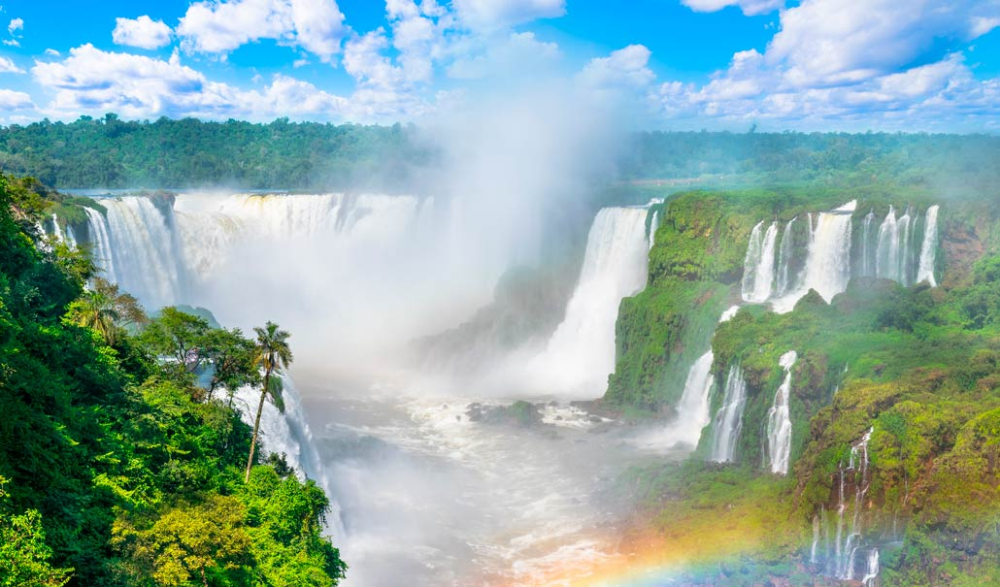
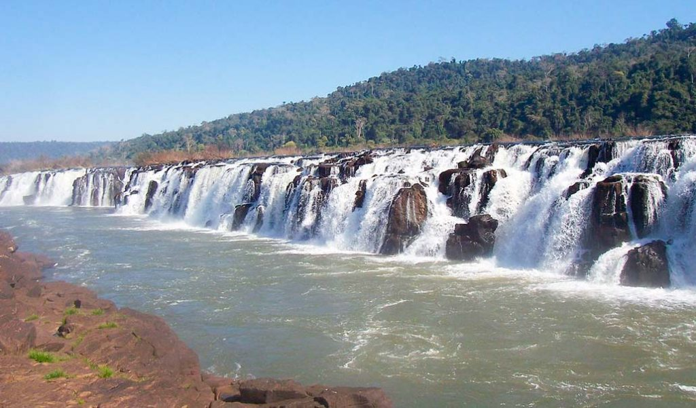
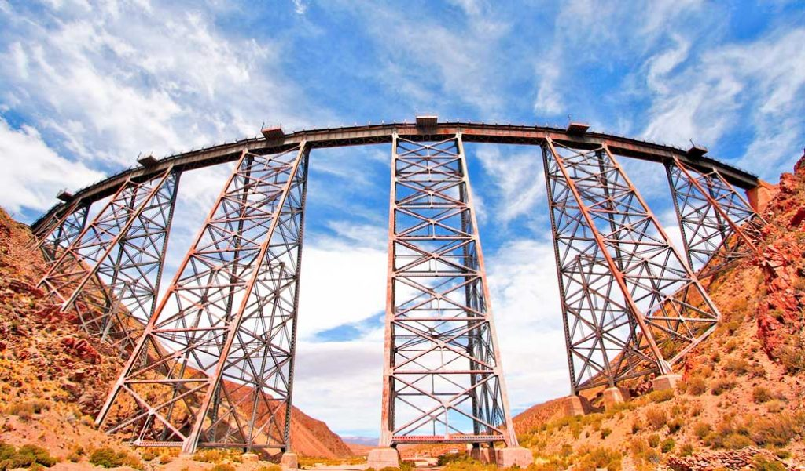
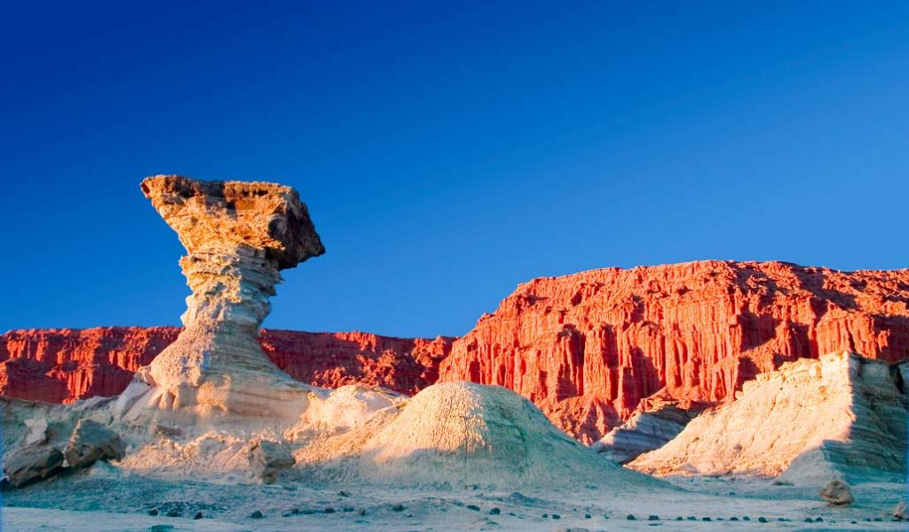
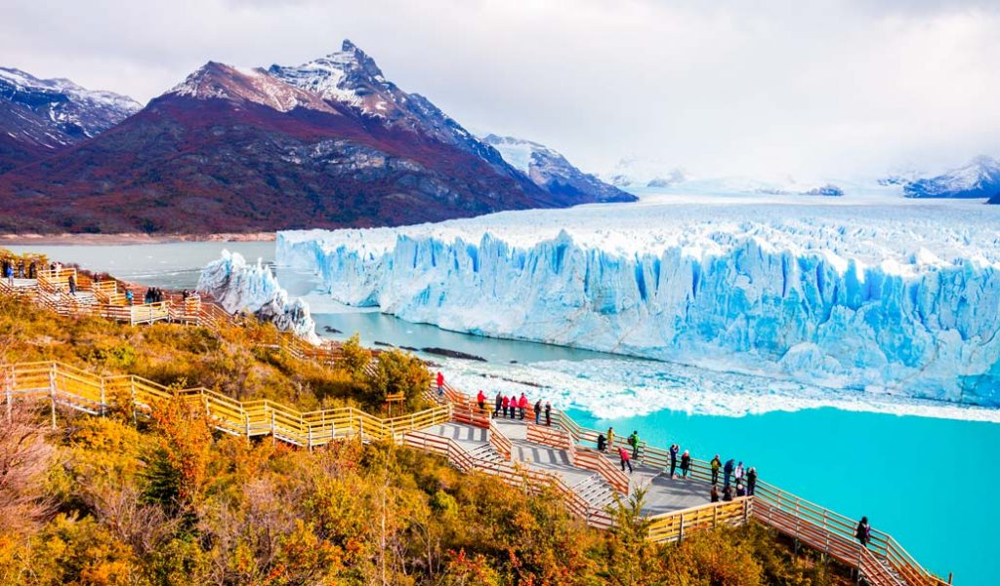
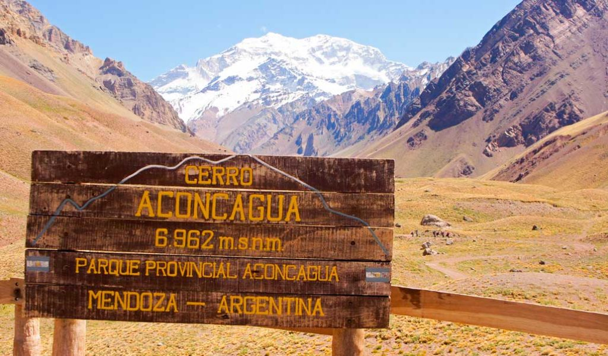

Las Cataratas del Iguazú son una de las 7 maravillas naturales del mundo y uno de los lugares más turísticos de Argentina que merece la pena visitar. Este es uno de esos sitios donde la naturaleza te deja sin habla, no necesitan mucha presentación.
Link
Se encuentran en la selva misionera y es una falla extraña de la naturaleza, el agua corre horizontal por los saltos. Hacer un viaje por la selva debería estar en la lista de todo aventurero.
Link
En la provincia de Salta en el Noroeste Argentino, llama la atención lo compleja que es su construcción y está considerado uno de los mejores viajes en tren, según National Geographic. En su recorrido alcanza más de 4000 metros de altura en algunos tramos y las vistas son impresionantes.
Link
Pertenece al parque provincial de Ischigualasto en la provincia de San Juan. De formas caprichosas y colores que impresionan, este sitio es de una importancia geológica y paleontológica de valor incalculable. No es solo un lugar que impresiona, es literalmente como estar en otra era del mundo.
Link
Declarado Patrimonio de la Humanidad por la Unesco, es uno de los paisajes naturales de Argentina más impactantes que puedes ver. Si visitas el Parque Nacional los Glaciares podrás navegar entre icebergs y hacer trekking por el hielo.
Link
Los escaladores saben que es, el Aconcagua es el pico más alto de América, miles de personas intentan alcanzar su cima todos los años. Si no te interesa escalar, puedes llegar hasta la base. El Aconcagua se encuentra en la Cordillera de los Andes, en la provincia de Mendoza, tierra del buen vino, termas y gente adorable.
Link